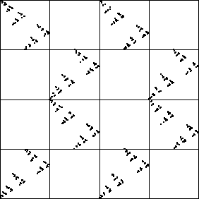

| Next, here is the driven IFS for the |
|  |
| The empty addresses are |
| 12, 13, 22, 23, 31, 34, 41, and 44. |
| And again, imposing the corresponding restrictions generates the same picture. So this, too, is a simple chaotic process. |
Return to IFS Driven by Dynamical Systems.